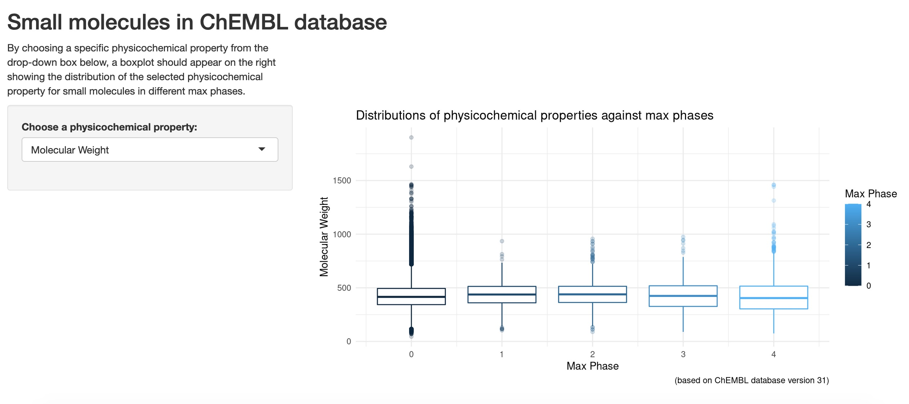

Back story
It has been a long while since I’ve used R in my projects. Last year during the time when I bravely embraced the role of rotating curator for @WeAreRLadies on Twitter around end of October, I did mention that I wanted to learn Shiny. I haven’t forgotten about this actually. So as promised, here it is, my first Shiny app in R, which is really a very simple interactive web app about small molecules from ChEMBL database. The URL to reach this app, ShinyAppChembl, is at: https://jhylin.shinyapps.io/ShinyAppChembl/. It shows a selected set of physicochemical properties for the curated small molecules in different max phases in boxplot formats. Note: it may take a few minutes to load the plot when first opening the app.
The process
Since I haven’t been using a lot of R lately, I just wanted to document how I approached this Shiny app framework, as part of my self-directed learning for R that started around mid-2022. The first place I went to was not Google’s Bard or OpenAI’s ChatGPT, as I was trying to preempt a scenario where if both of these options were temporarily down, what would I do to learn a new tool. So I visited the Shiny website first, and literally started from the “Get Started” section there, then tried to read through the lessons provided. I gathered a quick overview about the core components within a Shiny app, which were the user interface, server logic and the call to run or create app in the end, and thought to get started from there.
One of the most helpful online books called, “Mastering Shiny” had clarified a few coding issues for me. The reactivity section in the book was very useful as well to help with understanding the interactivity concept in the app. The best and also the hardest thing at this stage after reading some of the information was to actually start coding for the app in RStudio IDE, which I did soon after.
Trials-and-errors
Initially, I’ve noticed in the gallery section from the Shiny website that some of the basic Shiny apps had plots produced with R code using S3 method - the type with class ‘formula’, such as boxplot(formula e.g. y ~ group, data, and so on). So I started with this first and ended up with a draft version shown below:

I then tried the ggplot2 version, which I preferred to use. However, I kept on hitting a roadblock repeatedly (as shown in the image below):

I ended up working through this issue of not being able to display the boxplots properly over at least two days, where I tried to figure out how to change the code so that the boxplots would appear as the output in the app. I actually wrote a plot function code (as shown below) before working on the app.R file, in order to trial plotting the boxplots, making sure that the code worked before using it in the app.R file.
```{r}
dfBoxplot <- function(var) {
label <- rlang::englue("{{var}} vs. Max Phases of small molecules")
chembl %>%
select(`Max Phase`, {{ var }}) %>%
ggplot(aes(x = `Max Phase`, y = {{ var }})) +
geom_boxplot(aes(group = cut_width(`Max Phase`, 0.25),
colour = `Max Phase`),
outlier.alpha = 0.2) +
labs(title = label)
}
```Once I made sure this code worked, I transplanted the code into the server section of the app.R file, however it wasn’t that simple obviously. Through the process of more trials-and-errors, I managed to figure out the code for the plot output in the final version, which was not the same as the function code above, but more like this.
```{r}
output$BPlot <- renderPlot({
ggplot(chembl, aes(`Max Phase`, .data[[input$variable]])) +
geom_boxplot(aes(group = cut_width(`Max Phase`, 0.25),
colour = `Max Phase`), outlier.alpha = 0.2) +
labs(title = "Distributions of physicochemical properties against max phases",
caption = "(based on ChEMBL database version 31)") +
theme_minimal()
}, res = 96) %>% bindCache(chembl$`Max Phase`, input$variable)
```I then read about the section on “Tidy evaluation” in the “Mastering Shiny” book, which had thoroughly described the problems I’ve encountered (and which I wished I had actually read this section before and not after hitting the roadblock…). So I’d highly recommend new users to read this section and also the rest of the book if Shiny’s also new to you.
Final app
The final app now looks like this:

App deployment
After I got the app working, I looked into where I could deploy the app, since my main goal was to learn and share my work. At first, I went to the Shiny section on the Quarto website to see if it was possible to deploy the app in Quarto. However, after reading through several questions and answers in relation to Shiny apps and Quarto website, it was obvious that it was still not possible yet to deploy the app in an interactive way on Quarto websites (but it was mentioned in Posit community that this was being looked into, so I’m looking forward to the day when we can do exactly that in the future). This means that currently, there will only be an app image showing up in a Quarto document at most. I ended up choosing shinyapp.io to deploy my first Shiny app for now.
About the boxplots
Since the main goal of this post is more on the process of producing a simple Shiny app for a new comer, I won’t go into the fine details to describe how these boxplots differ between different max phases. Also as a side note, I’m aware that some experts in data visualisations might not really like boxplots in general, but for my case, I’ve got molecules in different max phases where a boxplot is presented for each max phase lining up next to each other. Therefore, in a way, some relative comparisons or differences could be drawn visually in the first glance, although other graph types such as density plots or heat maps might be better options.
I’ll focus on the “QED Weighted” variable here, as it’s a physicochemical property that has combined several molecular features together as a score (please refer to this post - section: “Some exploratory data analysis” for details about this QED weighted score). For all the boxplots shown when “QED Weighted” is selected from the drop-down box, max phase 4 molecules obviously have higher QED weighted scores in general than all of the other max phases. This is especially clear when comparing the medians between them, with max phase 4 small molecules having a median QED weighted score of more than 0.5, and the rest of the other max phases had 0.5 or below. The higher the QED weighted scores, the more druglike the molecules will be, and for max phase 4 molecules, they are mostly prescription medicines that have already reached approval and are already being widely prescribed. So this makes sense as this is being reflected in the boxplots for these ChEMBL small molecules.
Final words
Finally, I’m quite pleasantly surprised that there is also a Shiny in Python version, which has a Shinylive option to deploy Shiny app interactively in GitHub Gist and so on… I’ll most likely need to read further into this and make this as my next project. This is also a nice break from my recent machine learning projects, which I’ll try to return to once I’ve had enough fun with Shiny!
Thanks for reading.